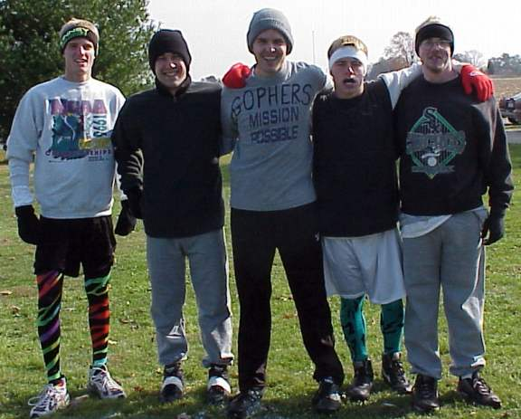
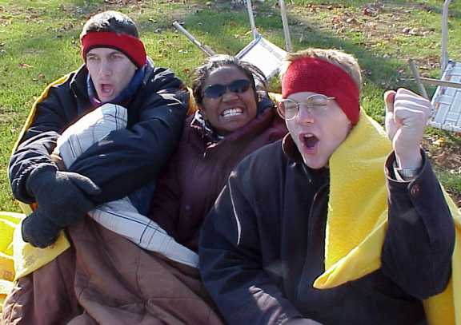
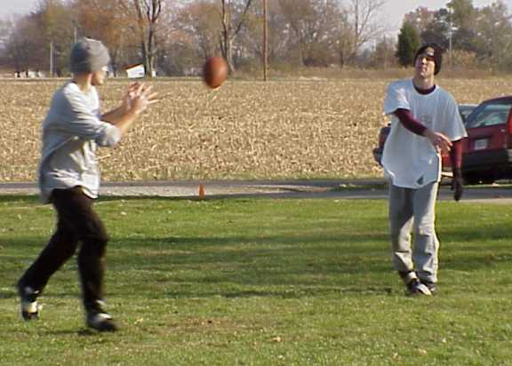
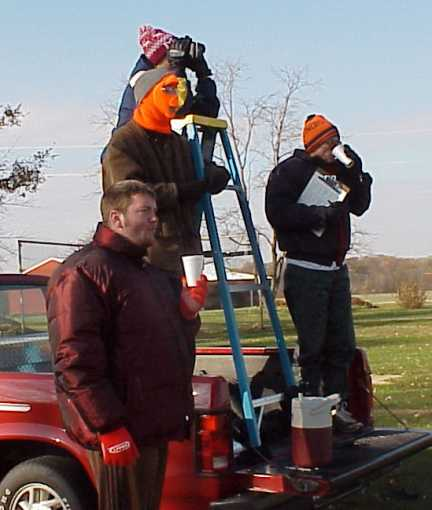

WELCOME TO THE OFFICIAL SITE OF
CORK BOWL
Click
Here for Cork Bowl 10
BUSHDOGS HANG ON LATE FOR 126-112
WIN IN CORK BOWL 10
November 18th - Cork Bowl's first decade came to a close on
Saturday in dramatic fashion once again as the Bushdogs held off
a furious late charge from the Gophers for a 126-112 victory.
For the third consecutive season, the game remained undecided
into the closing seconds. The past three matchups have been decided
by a total of only five touchdowns, and Cork Bowl 2K was no different.
"Whew. That's about all I have to say," remarked
an exhausted Patrick Cork following the game. "We had a lead
late and did everything we could to just hang on to it. If one
or two plays go the other way, the outcome would have been in
their favor."
After two abnormally warm games, Saturday's conditions were
more traditional with temperatures hovering around 35 degrees
with a stiff breeze from the southwest. The Gophers began going
into the wind with the ball to start the game and marched down
the field after back to back completions from quarterback Reggie
Truitt. However, on first and goal, Truitt tried to force a pass
into rookie Steve Sanders and the ball was deflected into the
air and intercepted by Chris Cork in the endzone. Cork's 11th
career interception led to a fourth-and-goal touchdown pass from
 Willy Truitt
to Patrick Cork for an early 7-0 lead.The Gophers fired back on
their second possession as Reggie found Kevin Ryan for a short
score to tie the game at 7. After the Bushdogs were unable to
pick up a first down, Kevin Ryan took his turn under center and
hooked up with Greg Howard for a score and the first Gophers lead
at 7-14. The Bushdogs defense would step up following a Willy
to Josh Williamson touchdown as they held on 4th and long and
scored on the next play with a Willy to Ryan Tomlinson hook up.
On the ensuing drive, Willy Truitt picked off brother Reggie and
returned it to the five yard line where he ran it in himself to
give the Bushdogs a 28-14 advantage to end the first quarter of
play.
Willy Truitt
to Patrick Cork for an early 7-0 lead.The Gophers fired back on
their second possession as Reggie found Kevin Ryan for a short
score to tie the game at 7. After the Bushdogs were unable to
pick up a first down, Kevin Ryan took his turn under center and
hooked up with Greg Howard for a score and the first Gophers lead
at 7-14. The Bushdogs defense would step up following a Willy
to Josh Williamson touchdown as they held on 4th and long and
scored on the next play with a Willy to Ryan Tomlinson hook up.
On the ensuing drive, Willy Truitt picked off brother Reggie and
returned it to the five yard line where he ran it in himself to
give the Bushdogs a 28-14 advantage to end the first quarter of
play.
Career receptions leader Patrick Cork had just one reception
in the first period, but the Bushdogs had a 28-14 lead thanks
to a very balanced offense. Willy Truitt completed seven passes
to four different receivers in the quarter with Williamson, Tomlinson,
and Patrick each having a touchdown.
The second quarter began with Kevin hooking up with the rookie
Sanders for a fancy run-after-the-catch score to cut the lead
to 28-21, but the Bushdogs fired right back on Chris Cork's first
touchdown catch to take a 35-21 lead. The first five scores for
the 'Dogs were made by each of the five players including a Willy
Truitt rushing touchdown. "We made it a goal to get everyone
involved early in the game," commented quarterback Willy
Truitt. "That puts pressure on each of their defenders and
keeps all of your receivers in the game." A big point in
the game followed as rookie Steve Sanders made his first appearance
at quarterback. Sanders immediately led the Gophers to a score
finding Greg Howard open in the middle of the field to cut the
lead to 35-28. Once again, the Bushdogs offense stalled and the
Gophers took over deep in Bushdog territory. With the ball on
the one yard line, a near certain score turned into a wasted opportunity
as
Kevin Ryan was sacked by
Patrick on third down and Reggie's fourth down pass was dropped
in the endzone allowing the 'Dogs to escape. On the next drive,
Ryan Tomlinson was stopped inside the one yard line by Josh Helton
on third and goal, and the Bushdogs failed to convert on fourth
down. Reggie soon found Kevin Ryan for another score to tie the
game at 35. On the first play of the next drive, Reggie Truitt
nearly intercepted Willy's deep pass, but the ball tipped off
his fingertips right into the hands of Patrick Cork and the Bushdogs
had a 42-35 advantage. Kevin Ryan found Sanders on a short fourth
down pass and Sanders would stretch across the goal line for a
big score to tie the score at 42. Again, the Bushdogs would try
to attack deep down the field, but Willy's pass was intercepted
this time by Reggie and Reggie later found Greg Howard on the
sideline for a score and the first Gopher lead since early in
the game at 42-49. With just 1:00 left in the half, Willy pounded
the ball down the field to Patrick as he completed three balls
to his favorite target capped off by a short touchdown catch to
end the half with the score 49-49.
The first half was full of missed opportunities for both teams
as each squad was stopped inside the three yard line on one occasion,
not to mention several turnovers on downs. Patrick Cork led all
receivers with 7 first half catches including three touchdowns
and Gophers receiver Greg Howard had 6 receptions and 3 touchdowns.
Willy Truitt completed 19 of 34 passes for the Bushdogs. Kevin
Ryan was 6-for-12 with 3 scores and Reggie Truitt was just 9-of-20
with a pair of interceptions in the half. The most effective quarterback
for the Gophers, the rookie Sanders, was not used after his touchdown
march in which he was 2-for-2 with a touchdown.
"The first half was one of the slower ones I remember,"
remarked Patrick. "Neither offense had much of a rhythm and
that kept the scoring low. The wind was pretty brutal too and
it took away any chance of putting the ball down the field for
quick scores."
The Bushdogs had possession to start the third quarter traveling
with the wind behind them and used a hurry-up offense to march
down and score on a pass from Willy to Chris Cork. Reggie Truitt
found Kevin Ryan to tie the game at 56 and then the Gophers really
brought the defensive pressure. Being blitzed heavily, Willy threw
a deep ball up for grabs and Chris Cork out jumped Sanders deep
down the field for a big first down. Ryan Tomlinson caught his
second touchdown pass of the game on the next play and the Bushdogs
led 63-56. On the next possession, Patrick Cork forced a fumble
on the rookie Sanders and recovered it himself deep in Gopher
territory. The 'Dogs struck quickly as Willy found Chris in the
corner of the endzone on the first play for a 70-56 lead. Two
pl

ays later, Willy
Truitt dove in front of a Reggie Truitt pass and picked it off
near midfield. Once again, the Bushdogs went right for the score
as Willy found Patrick in the corner this time on the first play
and the lead was suddenly 77-56. The Gophers remained calm and
Reggie Truitt made a nice run after the catch on a Kevin Ryan
pass and scored to cut the lead to 77-63. The Gophers defense
stiffened and stopped Willy Truitt's run on fourth down and Kevin
Ryan hit Greg Howard for a touchdown to shave the lead to 77-70.
To slow down the blitz of the Gophers, the Bushdogs continued
with the no-huddle offense and scored on a dump off pass to Patrick
for the 84-70 advantage. The Gophers would drive again, but Sanders
was stripped of the ball at the one yard line by Patrick Cork
who once again recovered the fumble himself for the second time
in the quarter. On the first play after the turnover, the Bushdogs
continued to attack as Willy hit Josh Williamson with a beautiful
deep ball down the middle for a touchdown and a 91-70 lead after
three quarters.
Turnovers plagued the Gophers in the third quarter as Reggie
threw one interception and Sanders fumbled twice. The Bushdogs
converted all three of the turnovers into immediate points scornig
on the first play from scrimmage each time. The hurry-up offense
of the Bushdogs put some major points on the board as they outscored
the Gophers 42-21 in the period thanks to a very effective offense.
Willy Truitt was 10-14 in the quarter and threw 6 touchdown passes
and the Gophers trailed by 21 points with 25 minutes to play.
With Kevin Ryan back at quarterback, the Gophers converted
on fourth and 10, but then missed another scoring opportunity
as the fourth down pass tipped off the hands of Sanders in the
endzone. The Bushdogs stayed with the no huddle offense on the
next possession, and escaped trouble again as Sanders just missed
intercepting a deep slant from Willy. Later in the drive, Willy
was forced out of the pocket and with Greg Howard hanging onto
his legs he launched a pass into the endzone. Patrick Cork made
a diving grab for a huge score that pushed the lead to a seemingly
insurmountable 98-70 with just over 18 minutes to play. "We
thought we had them finished off at that point

,"
added Patrick. "To come back from four scores in Cork Bowl
is very tough especially with less than a quarter to do it."
With Kevin Ryan running the hurry up offense for the Gophers,
Steve Sanders made a big 4th down catch which later resulted in
a Greg Howard touchdown and the score was 98-77. With tremendous
pressure being put on by the Gophers, Willy Truitt had no time
to find receivers and the 'Dogs turned the ball over on downs.
Again, Sanders made a big catch on 4th and goal for the score
and the lead was down to 14 at 98-84. More pressure came from
the Gophers defense with blitzers coming from every direction
and on fourth and long, Chris Cork was tackled just short of the
first down marker giving the ball back to the Gophers. The Bushdog
defense continued to force fourth down plays for the Gophers,
but once again Reggie Truitt was able to just cross the goal line
on 4th and long and the game was suddenly 98-91. In desperate
need of a touchdown, Willy went back to Patrick on the next drive
on short patterns in an attempt to slow down the Gopher blitz.
Patrick's third catch of the drive resulted in a score as he broke
it down the sideline for the touchdown and pushed the lead to
105-91. With 6 minutes remaining, Reggie found Kevin Ryan for
a long completion down the field, but his next pass was underthrown
toward the sidelines and Josh Williamson made a remarkable diving
interception near the goal line. Williamson alertly scrambled
to his feet and returned it all the way to the five yard line
of the Gophers where Willy found Chris Cork for the touchdown
and the lead was 112-91. Desperate for quick scores, Reggie found
Greg Howard again in the corner for the score to cut the lead
to 112-98, but only 3 minutes were left on the clock. With the
Bushdogs only needing to hold onto the ball and pick up a first
down and run some clock, Steve Sanders made his biggest play of
the game for the Gophers. The very next play from scrimmage, Sanders
jumped a quick slant route by Chris Cork and picked off Willy
Truitt's pass at the 10 and rumbled into the endzone for an enormous
defensive touchdown that brought the Gophers deficit to 112-105.
Willy, however, led his team down the field on a must-score drive
and capped it off with his second rushing touchdown of the game
with 1:30 left. Another fast drive from the Gophers finished with
a Reggie to Greg touchdown, but they still trailed 119-112 and
had only one timeout left. Two short completions and a Willy Truitt
run put the Bushdogs three yards short of the first down with
7 seconds left on the clock and the Gophers out of timeouts. With
an all-out blitz in his face, Willy dumped the ball to Williamson
over the middle on the fourth and short and he scampered into
the endzone as time ran out for the 126-112 Bushdog win.

"I can't remember a game where the momentum switched so
fast and so often," said Commentator Tony Cork. " Each
time it looked like the Gophers were done, they would make a huge
play and stay in the game." Turnovers were the underlying
difference in the game as the Bushdogs turned the ball over twice
compared to 6 giveaways for the Gophers. "In the second half
we were very aggressive after we got turnovers," added Patrick.
"All four times they turned the ball over we scored on the
very next play. That can demoralize a team, but they never gave
in and kept the pressure on us as well." Although the Gophers
recorded only one sack in the game, their relentess pressure on
Willy Truitt forced numerous turnovers on downs, especially late
in the game. Another reason the Gophers were able to hang around
was their remarkable efficiency on fourth down. In the fourth
quarter alone, the Gophers converted on 6 fourth down plays to
either keep drives alive or finish them with scores.
Willy Truitt and Patrick Cork shared MVP honors for the Bushdogs
with Truitt having one of his most productive games at quarterback.
He was 44-for-71 with 16 touchdowns and threw just 2 interceptions.
"With the pressure he was under all day, those numbers are
outstanding," added Tony Cork. Truitt also had a pair of
big interceptions on defense as well. Patrick responded after
a one-catch first quarter to get 11 receptions in the second half
and finished with 18 on the day including a record-tying 7 touchdowns.
Patrick tallied 10 tackles and his two forced fumbles (and recoveries)
on Sanders also helped thwart Gopher scoring opportunities. Josh
Williamson tied a career high with 10 catches and a big fourth
quarter interception. Chris Cork ended with 9 catches and 4 TD's,
and had the opening-drive interception, but could have had more.
On a couple of occasions, the Gophers had 4th down and Chris could
have intercepted the pass, but decided to just knock it down and
take the field position. "I'm not about the stats, I'm about
the team," remarked Cork. Ryan Tomlinson ended his two-season
slump with 7 receptions and a pair of touchdowns. Donning the
"Flat Rock 2" jersey from injured Kirby Newell, Tomlinson
didn't exactly play Newell-like, but his 7 catch game was his
best performance since his rookie year in 1997.
Greg Howard had a huge fourth quarter for the Gophers and finished
with a career-high 12 catches and 7 touchdowns. Howard was the
main blitzer on defense as well and tallied 9 tackles and one
sack. "Greg played inspired football today," remarked
color commentator Kirby Newell. "He kept his team in the
game with his defensive pressure and made some big catches throughout."
The rookie Steve Sanders had a rookie-like performance showing
flashes of brilliance as he caught 15 passes for three scores
and had the big interception return late in the game. However,
two fumbles and several dropped passes will haunt Sanders for
the next 12 months. The two-headed quarterback for the Gophers
was inconsistent, but fairly productive. Kevin Ryan was 22-for-40
with 8 touchdowns and no interceptions while Reggie Truitt was
16-35 with 6 touchdowns and 4 interceptions. Reggie had a huge
day on defense with 14 tackles and one interception.
The big question from the Bushdogs was the disappearance of
Sanders at the quarterback spot. "To me, he was by far the
most effective quarterback they had," added Patrick. "Two
passes and a touchdown, and he didn't throw another pass. We wouldn't
have been able to blitz him and the way Reggie and Greg performed
at the receiver spot, they could have done some major damage with
the Colonel under center, but..."
"You can't ask for much more than a game that intense
and that close," added Commissioner Cork. "Although
there aren't many individual moments that really stand out, there
was plenty of excitement."
**The following is the summary of Cork Bowl 10 from famed
sports writer "The Scoop" - Remember that any views
and opinions expressed by "The Scoop" do not necessarily
coincide with those of Cork Bowl. They are much like the views
of Sports Illustrated's Dr. Z - mostly confusing with an occasional
good point**
Well the game was ugly, but intense. The wind seemed to be
a major factor and the sportsmanship was good. Now let's get to
the main points:
Most Valuable Player: This could go to Willy Truitt
or Patrick Cork easily and most people would give it to one of
these guys since they were on the winning team. However, as much
as it pains me to do it, I'm going to give the award to Greg Howard
because he really kept his team alive offensively and by putting
pressure on Willy.
Least Valuable Player: There were so many candidates!
My vote has to go to Josh Helton. He had a sophomore slump to
say the least. My question to Helton is this: If you dress like
a girl (a.k.a. the tights) how can you not expect to play like
a girl?
Play of the Game: There really wasn't any one play that
stood out, but I'd have to give it to the play when Willy was
wrapped up by Greg and Willy managed to throw the ball deep into
the endzone where Patrick Cork dove and made a great catch.
Best Comment by Announcer: When Tony Cork went out onto
the field: "There's an idiot on the field!"
Game Changing Play: Colonel Sanders and his fumble on
the 2 yard line that would have tied the game up. Of course, he
is a rookie.
Rookie of the Year: Hands down this award goes to the
Colonel. He adds so much excitement and is just such a competitor.
The fact that he was the only rookie made this an easy choice
though. Sanders is the Chris Weinke of Cork Bowl lore by making
his first appearance at the age of 25. Does anyone know if he
played minor league ball?
KEYS TO THE GAME (from "the Scoop")
Key #1 - Time and time again it has been proven that
a 2 quarterback system doesn't work. This Cork Bowl proved it
again as Reggie Truitt (aka Ryan Leaf) and Kevin Ryan (aka Moses
Moreno) could not get the job done. I'm still questioning why
the Colonel (aka Jim Harbaugh) didn't play the QB position.
Key #2 - Pressure, pressure, pressure. The only thing
that kept the Gophers in the game (except for Key #4). The Gophers
may have laid a blueprint for how to stop Willy Truitt in the
future.
Key #3 - When the Bushdogs stopped going deep and started
working the short passing game. The wind was just too strong to
go deep and it took the Bushdogs a half to figure it out!
Key #4 - Stamina. The Gophers stayed close due to the
fact that they were in better shape. The Bushdogs wore down. It
was obvious to me that Kentucky Fried Chicken is a good energy
source as evidenced by the Colonel's unbelievable ability to keep
motoring the entire game.
Key #5 -The biggest key to the game is right here. Colonel
Sanders and Josh Helton's pregame meal. As much as the KFC was
good for the stamina it was bad for the hands. These two players
(not to mention Kevin Ryan) dropped so many balls. I can't help
but think that the greasy chicken was the cause of the drops.
If you're gonna eat KFC before the game, make sure and wash your
hands after you're done!!!
Overall, a great game that wasn't over until the last 20 seconds.
You really can't ask for much more. Of course the absence of Kirby
Newell was very noticeable. He adds trash talk and the ability
to run people over -- 2 things that were sorely missed in Cork
Bowl 10. I don't know about all of you, but I can't wait until
next year!
Listen up fans, Colonel Sanders will be a force next year.
He has all of the tools. It was obvious that he didn't know what
he was up against this year, but I'm expecting big things from
him next year. Sanders, this is just a little info for you. They
put the moist towelette in the KFC box for a reason. Use it next
year!!!
Signing off,
The Scoop
Cork
Bowl 10 Stats
CORK BOWL 10 LOOKS LIKE ANOTHER THRILLER
**Cork
Bowl 10 News & Comments (click here to read player comments
and reactions)
INJURY REPORT AS OF 11-15-00
BUSHDOGS - Chris Cork - strained neck (probable);
Patrick Cork - strained knee ligament (questionable);
Ryan Tomlinson - bruised right big toe (probable);
Willy Truitt - multiple bloodblisters on forefinger
of throwing hand (expected to start); Josh Williamson -
3 stress fractures in left femur, 2 in the distal portion of right
tibia and avulsion fracture of the pelvis (probable)
GOPHERS - Kevin Ryan - court appearance with
possible community service (questionable)
| BUSHDOGS |
HT. |
WT. |
EXP. |
|| |
GOPHERS |
HT. |
WT. |
EXP |
| Chris Cork |
6'2 |
170 |
10 |
|| |
Steve Sanders |
6'0 |
175 |
R |
| Patrick Cork |
5'11 |
145 |
10 |
|| |
Reggie Truitt |
5'10 |
155 |
7 |
| Willy Truitt |
5'9 |
140 |
6 |
|| |
Greg Howard |
5'9 |
155 |
5 |
| Josh Williamson |
5'8 |
155 |
6 |
|| |
Kevin Ryan |
5'10 |
170 |
6 |
| Ryan Tomlinson |
6'0 |
150 |
4 |
|| |
Josh Helton |
6'0 |
140 |
2 |
A near rematch from a year ago, Cork Bowl 10 will be without
one of the Cork Bowl greats from the first 10 years of the game.
6-year veteran Kirby Newell will miss his first Cork Bowl since
he began his career in 1994 after suffering a foot injury several
weeks ago. Newell has faked injuries for each of the past 6 seasons,
but this is no cry of wolf. Newell is without a doubt a Cork Bowl
superstar and has a 4-2 record as a player, but his absence will
not overshadow the conclusion of the first decade of Cork Bowl.
"Although Kirby has helped revolutionize this great game,
we have to go on with the show," commented Commissioner Patrick
Cork. "We believe the individual we have chosen to take his
place will fill his shoes and add some new life to the Cork Bowl
family. He is no Kirby Newell, but who is?"
That individual is Steve Sanders from Indianapolis,
Indiana. Sanders (age 25), the roommate of Cork Bowl superstar
Chris Cork, is not well known by even the most avid Cork Bowl
followers. Rumor has it that Sanders was a high school football
great when younger, although no game film has been seen. Sanders
has a load of pressure on his shoulders as he must lead the Gophers
offensively and defensively. Last year, veterans Reggie
Truitt and Kevin Ryan shared equal time
under center at the quarterback position with both players having
impressive numbers. Although many teams have not used a multi-quarterback
offense, the idea is one that has been productive as it keeps
the players fresh and forces the defense to adjust continuously
the different offensive looks.
Truitt has been one of the most versatile players
in Cork Bowl history as he ranks second on the all-time passing
list as well as in the top five in receptions and tackles. Recent
reports on Ryan, once the league bruiser, reveal
that he has lost in upwards of 25 pounds from last year's playing
weight and may not look to use his size as an advantage as he
did in the past. Ryan has had success over the middle in the past
and usually makes the most of each catch by punishing defenders
after the catch, but with the new sleek look, he could be a totally
different player. Greg Howard and Josh Helton
will round out the Gophers squad. Howard has improved
consistently over the past several years and has turned himself
into a big play threat and a solid defender. Howard must continue
his development towards becoming a top-tier Cork Bowl player if
his team wants a chance to win. Helton is returning for his second
season after a solid 6 reception game last season.
As for the Brazilian Bushdogs, the only change is the addition
of Josh Williamson. The core unit returns from last year's thrilling
championship team led once again by the Cork Brothers. For the
third straight season, Chris and Patrick
will look to lead their team to a Cork Bowl trophy. Chris
ranks third on the all-time reception list and has a huge lead
on the all-time interception list with 10. He is one of only two
players (brother Patrick) to appear in all 10 Cork Bowls. With
excellent hands and a nose for the endzone, Chris is extremely
effective near the goal line. Brother Patrick has
become a true possession receiver and ranks first on the all-time
receptions list. Patrick is the only player in history to win
back-to-back MVP awards which included a breakout game in '98
when he caught a record 24 passes. He will look to extend his
receptions lead with the help from quarterback Willy Truitt.
Truitt is Cork Bowl's leader in all major passing statistics,
and with the Cork Brothers split wide, his stats can only improve.
Josh Williamson has switched teams from last year
and will bring his quickness and strength to aid a questionable
Bushdog defense. Williamson has excelled in recent years as a
defender ranking first on the all-time sacks list and is the only
player to have multiple sacks in the same game ('98). Ryan
Tomlinson will look to add another championship ring to
his trophy case as he will try to rebound from a sub-par '99 game.
Tomlinson was very ill last season and blames the illness on his
poor play.
BY THE NUMBERS
* 133-226 - final score from last year's game won by the Weasels
* Patrick Cork - 88 career receptions (#1); 29 touchdowns (#1);
55 tackles (#2); record 24 receptions in 1998; 17.5 recpetions
per game over past four seasons; 1/2 trees crashed into over past
2 years
*Chris Cork - 73 career receptions (#3); 23 touchdowns; 49 tackles
(#3); 10 interceptions (#1); 4.7 one-handed catches per game over
last 4 seasons
*Willy Truitt - 138 completions (#1); 57 touchdown passes (#1);
10 rushing touchdowns (#1)
*Josh Williamson - 28 career receptions (#4); 12 touchdowns; 29
tackles; 3 sacks (#1)
*Ryan Tomlinson - 19 career receptions (#8); 6 touchdowns; 6 tackles
in three seasons
*Reggie Truitt - 119 completions (#2); 51 touchdown passes
(#2); 23 career receptions (#6); 8 touchdown receptions; 46 tackles
(#4)
*Greg Howard - 28 career receptions (#4); 15 touchdowns; career
high 6 touchdowns in '99; 4 straight seasons of flexing muscles
in pregame
*Kevin Ryan - 23 career receptions (#6); 11 touchdowns; 4 straight
Cork Bowl losses
*Josh Helton - 6 catches and 3 touchdowns in '99 debut
*Steve Sanders - sneaky speed, league knows little of football
potential
Take
a look at the history and rules of Cork Bowl
Take
a glance at Cork Bowl 9
Check
all of the info from Cork Bowl 8
Check
out the scoring summary and stats for Cork Bowl 8
Check
out the Cork Bowl 7 stats
Check
out the Cork Bowl 6 stats
Check
out the Cork Bowl 5 stats
Check
out the Cork Bowl 4 stats
Check
out the Cork Bowl 2 stats
Check
out the career Cork Bowl stats from 1992-2000 (**updated 11-25-00)